5' 4" · A young adult pop singer with a slight but full-scale, spring-loaded build and a bright professional performance presence. Slight but unmistakably adult and full-scale, light, grounded and spring-loaded with soft knees; never childlike or doll-proportioned. Her recognition cues are two clearly separate ponytails attached to opposite sides of the head, a fitted cropped jacket, a short skirt, dark dance boots, empty hands, and a headset boom, all readable without facial detail; the ponytails never merge into one hair mass and no headwear is present. She wears a bone-coloured fitted cropped performance jacket with gold trim and a dark separating band inside the black outline, a coordinated short skirt, and dark dance boots. She holds no handheld prop: both hands stay visibly open and empty, and a small headset boom ends at the corner of her mouth. Her ready stance is light and grounded with soft knees, readable staggered feet, two open empty hands, and asymmetrical arms prepared for choreography. Palette, as base/shadow/highlight per material: dark #20232B / #101217 / #3A3E48; white #F1EEE5 / #BDB9AE / #FFFFFF; metal #6F747C / #34383E / #B5BAC0; bone #E6E4DE / #A9A79F / #FFFFFF; gold #C6A13A / #745A18 / #F0D36A; separator #34303A / #17141B / #57515F; skin #D39A76 / #8A5D45 / #F0BD98; hair #342A3F / #17121D / #67557A. Never draw: handheld microphone, stand, or cable; merged ponytails; childlike proportions; school uniform; brand marks; magical-girl effects; closed prop-holding fist.
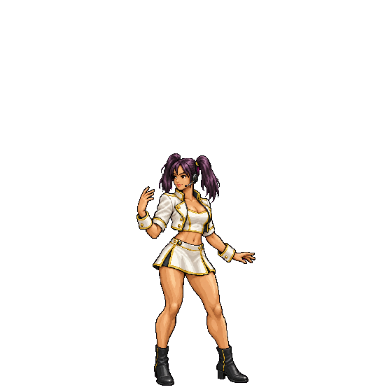
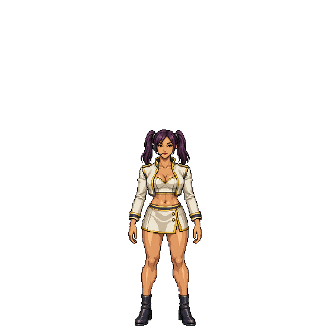
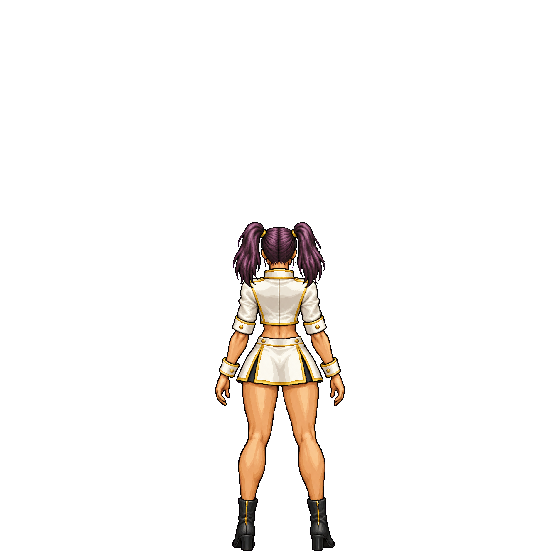
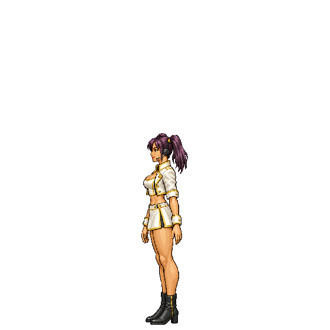
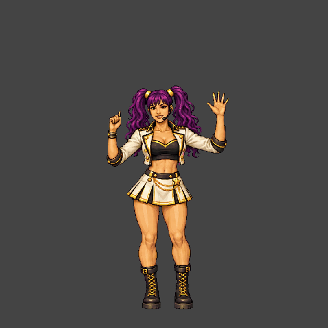
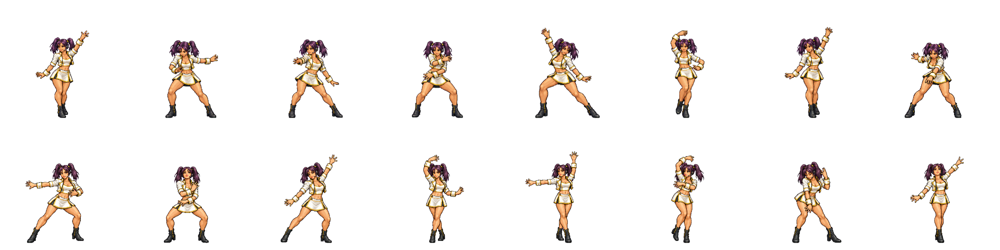
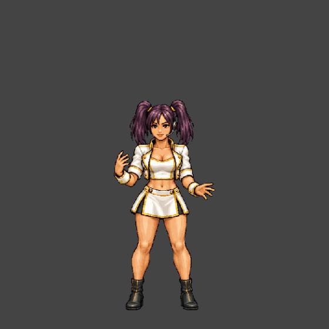
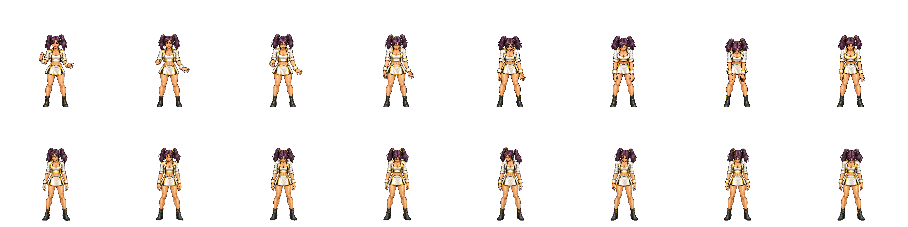
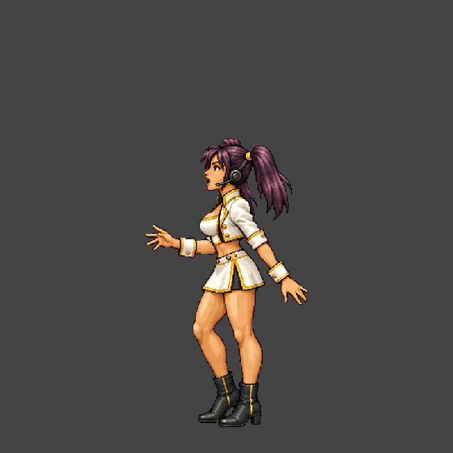
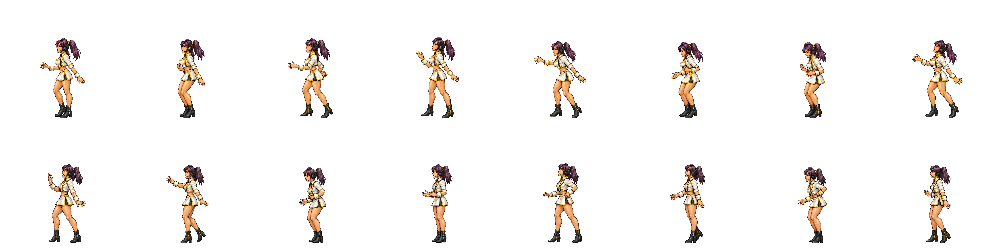
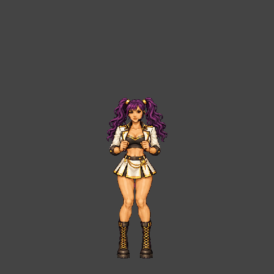
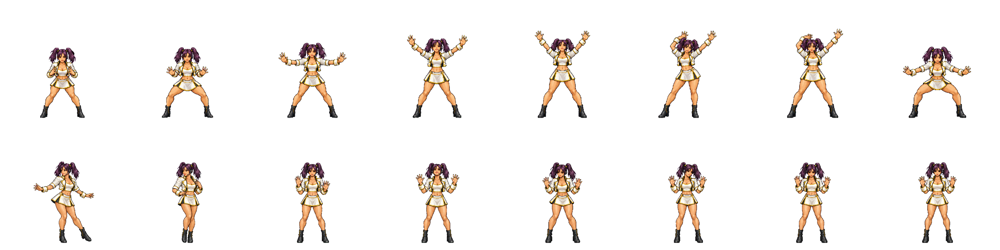